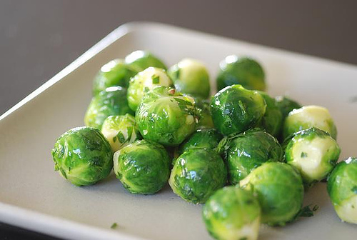
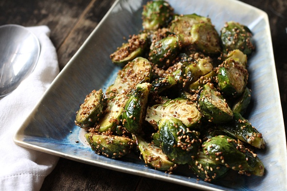
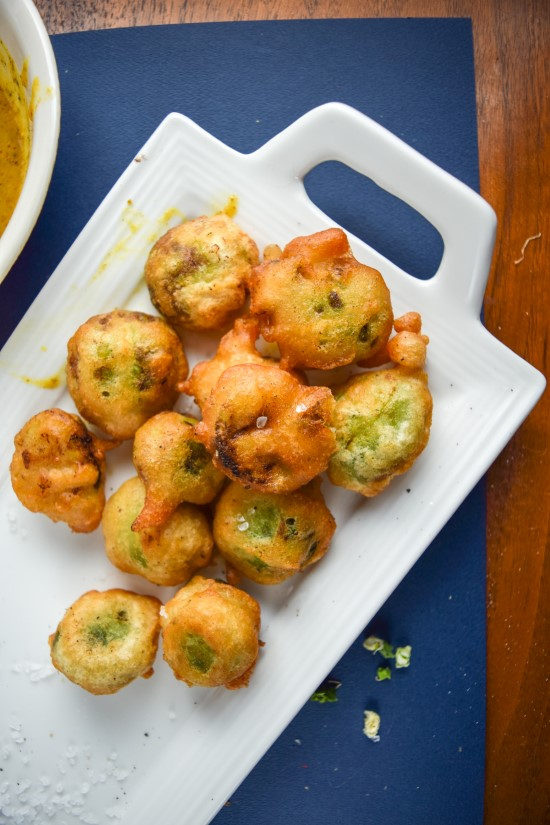
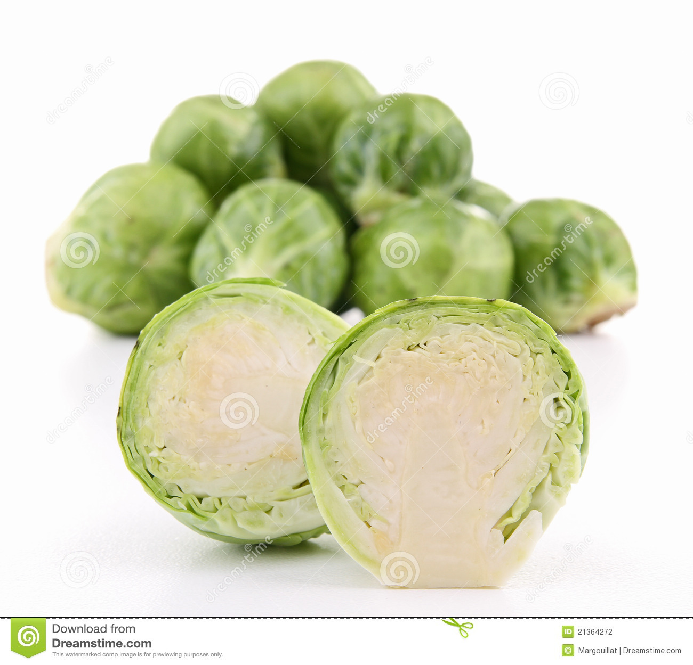

Buttered Brussel Sprouts
Freshly grown brussel sprouts cooked, and bathed in rich, creamy butter. It's healthy, but still tastes grrreat!

- 50 lbs. of brussel sprouts!!!!
- Buttered with rich, creamy butter
- Editor's choice!
- 75$
- Click here to buy!!!!!
Boiled Brussel Sprouts
Our special homemade recipe creates the perfect boiled brussel sprouts. Yum!

- 50 lbs. of brussel sprouts!!!!
- Boiled to beatiful perfection
- Winner of the Best Boiled Brussel Sprout of 2016 Award
- 89$
- Click here to buy!!!!!
Garlic Brussel Sprouts
These are cooked brussel sprouts, marinated in a garlic sauce (with our secret ingredent). Truly special!!!

- 50 lbs. of brussel sprouts!!!!
- Made with our super secret sauce
- People's Choice!
- 99.99$
- Click here to buy!!!!!
Deep Fried Brussel Sprouts
Derived from a delicous Southern recipe, these brussel sprouts are deep fried, and smothered in gravy.

- 50 lbs. of brussel sprouts!!!!
- 10 pounds of gravy
- Won the Fattening but Great Award in 2016
- 100$
- Click here to buy!!!!!
Raw Brussel Sprouts
Ahh, yes. We saved the best for last. No butter. No sauce. No gravy. Not cooked or fried in any way. Just good, old fashioned brussel sprouts.

- 5 lbs. of brussel sprouts!!!!
- RAW!!!
- Won the Best Food of All Time Award
- 900$
- Click here to buy!!!!!